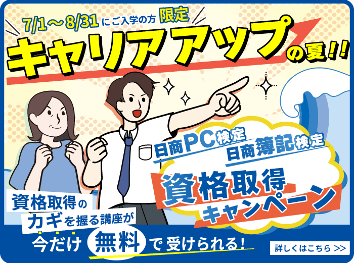
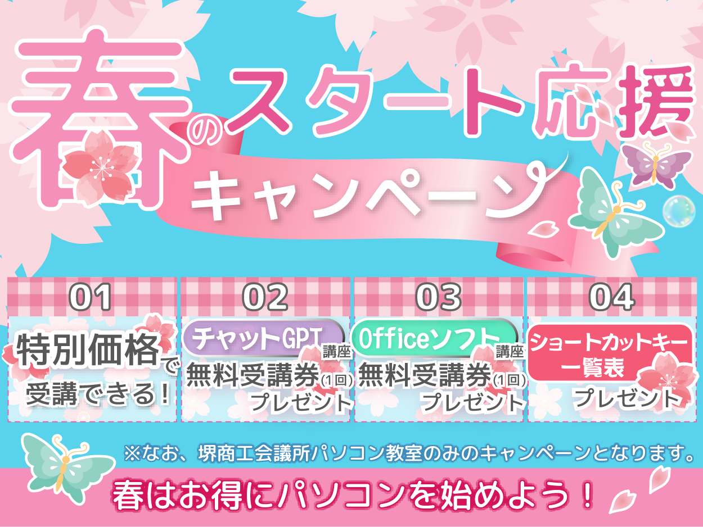
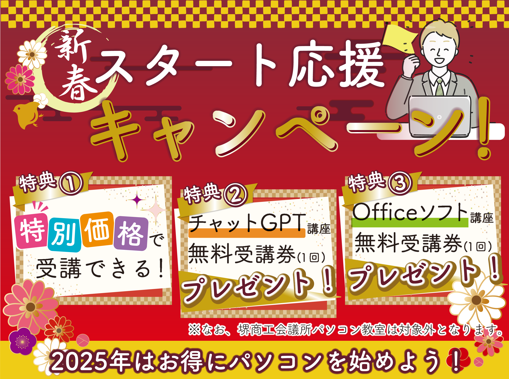

Sakurako Miyamoto Portfolio
About
宮本 桜子、1998年生まれ。丁寧で正確な仕事を心がけており、より良い表現がないか模索することが好きです。好奇心や探求心が強く、未知のプログラミング言語を勉強することに意欲的です。
Experience
2024.1より全国に約150教室のパソコン教室を運営している株式会社ミライフに入社。マーケティング部に所属し、officeソフトを使用した事務作業、illustratorを使用したバナーや記事・チラシ作り、wordpressでの編集作業、プレスリリース執筆、html,css,javaScriptを使用しての社内サイト作りなどをしていた。
社内画像共有＆修正管理システム（社内向け） 使用技術：HTML / CSS / JavaScript / PHP / MySQL / Node.js / Express 期間：2025年xx月〜xx月 概要：社内で共有される画像のアップロード・修正依頼をWeb上で完結できるシステムを構築。 担当：要件定義、設計、コーディング、データベース設計 ポイント： ・画像アップロード〜自動反映をPHP＋MySQLで実装 ・Node.js＋Expressを用いて修正意見フォームを構築 ・実際に社内で運用され、改善提案フローの効率化に貢献
社内業務効率化を目的とした自主開発ツールを作成。 PHP＋MySQLで画像登録機能、Node.js＋Expressで修正意見送信機能を構築。 チーム内でテスト運用・改善提案を行い、業務効率化の可能性を検証。
Works
🎨 Illustrator Banners



💻 Web Site (HTML/CSS/JS)
社内サイトにおいてマーケティング部専用ページを作成。社内ページなので、見ていて楽しくなるような堅苦しさのない温かい雰囲気のページ作りを心がけた。
⚙️ Node.js + Express Code
🗄️ PHP + MySQL Code
Skills
HTML,css,javaScript,Illustrator
Education
2016.3 京都女子高等学校卒業
2022.9 明治学院大学心理学部心理学科卒業
2023.4 職業訓練校にてwebデザインを学ぶ
Contact
tel : 090-1907-2639
mail : asagi0903moon@gmail.com